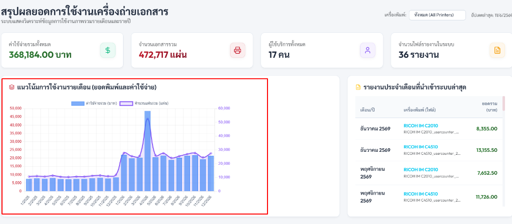
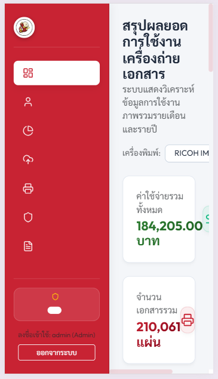
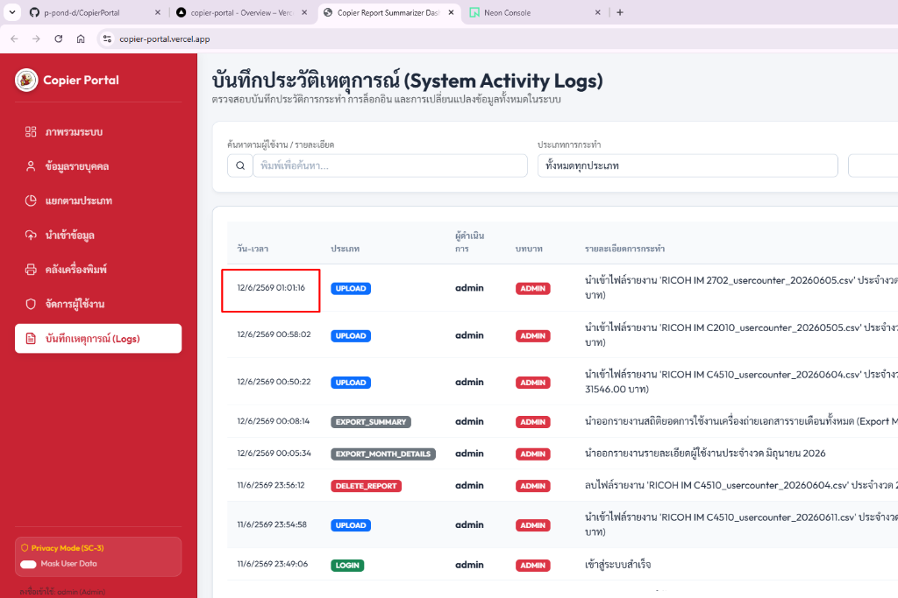

ระบบแดชบอร์ดความมั่นคงและความเป็นส่วนตัวในการประมวลผลค่าบริการการพิมพ์ขององค์กร
Submission Fields
Overview, Problem Statement, Objectives
Copier Portal: AI-Powered Copier Analytics & Privacy Masking Dashboard
ระบบแดชบอร์ดอัจฉริยะที่ใช้ AI Normalization ในการแปลงข้อมูลรายงานเครื่องพิมพ์ต่างรูปแบบให้อยู่ในฐานข้อมูลเดียวกัน ทำการเข้ารหัสข้อมูลส่วนบุคคล (PDPA Masking) อัตโนมัติก่อนส่งออก และประมวลผลข้อมูลเปรียบเทียบสถิติการเติบโตแบบปีต่อปี (Year-over-Year) เพื่อการควบคุมต้นทุน
ใช้งานในหน่วยงานสนับสนุนไอทีและฝ่ายการเงินขององค์กรที่ต้องการรวมรวมสถิติการใช้วัสดุสิ้นเปลืองการพิมพ์จากเครื่องพิมพ์หลากหลายยี่ห้อ (เช่น RICOH, Fuji Xerox)
โครงสร้างรายงานการพิมพ์ (CSV/Excel) ของผู้ผลิตเครื่องพิมพ์แต่ละยี่ห้อมีคอลัมน์และหัวตารางที่สะกดต่างกัน ทำให้ต้องเขียนโค้ดเฉพาะเจาะจงหรือทำงานแบบแมนนวล และมีข้อมูลส่วนบุคคล เช่น User ID และชื่อพนักงานปะปนอยู่ซึ่งเสี่ยงต่อการผิดกฎหมาย PDPA หากไม่มีระบบกรองที่ดี
เกิดความผิดพลาดในการรวมสถิติ เสียเวลาวิเคราะห์ และเสี่ยงต่อการรั่วไหลของข้อมูลระบุตัวตนพนักงานเมื่อส่งออกรายงานสรุปสถิติให้ฝ่ายการเงิน
ใช้ AI ในการจับคู่โครงสร้างคอลัมน์ (Schema Mapping) แบบไดนามิก ผนวกกับระบบ Masking ข้อมูลตามบทบาทผู้ใช้ (Role-based access) เพื่อล้างข้อมูลพนักงานโดยยังสามารถจับคู่ประวัติและเปรียบเทียบค่าใช้จ่ายรายปี (YoY) ได้อย่างถูกต้อง

Scope, AI Components, Workflow

ผู้ใช้ลากวางไฟล์ CSV/Excel รายงานของงวดเดือนและเครื่องพิมพ์ยี่ห้อใดๆ เข้าสู่ระบบ
AI Engine อ่านโครงสร้างหัวคอลัมน์ ยืนยันความถูกต้อง และเปลี่ยนรูปแบบข้อมูลให้พร้อมเก็บลง DB โครงสร้างกลาง
สกัดและ Mask รหัสพนักงานรวมถึงชื่อพนักงานด้วยอัลกอริทึม (First/Last Char) สำหรับผู้ใช้บทบาทปกติ
บันทึกประวัติลง PostgreSQL และอัปเดตตารางสรุปรายปี/รายเดือน (MonthlySummaries) อัตโนมัติ
แดชบอร์ดฝั่ง React ดึงข้อมูลจาก API มาแสดงกราฟแนวโน้มข้ามปี และตารางเปรียบเทียบสถิติ YoY
บันทึก Log ทุกๆ กิจกรรมการอัปโหลดหรือนำออกรายงานสรุปทางการเงิน (Excel) ของ Admin
ระบบทำงานแบบ 3-tier architecture (React, Node.js/Express, PostgreSQL) โดยเชื่อมต่อกับฐานข้อมูล PostgreSQL บนระบบ Neon Cloud Database เพื่อความมั่นคงสูง และเพื่อเพิ่มประสิทธิภาพสูงสุดในการวิเคราะห์เปรียบเทียบสถิติรายปี (YoY) ระบบมีการออกแบบตารางแคชสรุปข้อมูลประจำเดือน MonthlySummaries เพื่อช่วยลดปริมาณการคิวรีลงตารางหลัก UsageDetails ที่มีข้อมูลดิบปริมาณมหาศาล ป้องกันคิวรีค้างหรือฐานข้อมูลทำงานหนักเกินไป
Tools, Outcomes, Timeline, Team
ระบบหน้าเว็บสำหรับพนักงานและผู้บริหาร (Web Dashboard Portal) พร้อมฟังก์ชันคำนวณอัตโนมัติ, สคริปต์ความปลอดภัยในการเคลียร์และสร้างข้อมูลจำลอง, และรายงานผลในรูปแบบไฟล์ Excel (XLSX) แยกรายปี/รายเดือน

ออกแบบฐานข้อมูล สร้างตาราง และทำระบบ Dynamic Parser ในการรับไฟล์ พร้อมสร้าง mock CSV ข้อมูลปริมาณการพิมพ์
ปรับปรุง UX ให้รองรับ Mobile (RWD), เพิ่มกลไก Masking ตามบทบาทผู้ใช้ และระบบ Audit Activity Logs ใน backend
ทำระบบคำนวณเปอร์เซ็นต์ YoY, กราฟเปรียบเทียบรายปีบน Dashboard และตารางสถิติสรุปเปรียบเทียบปีต่อปี
เชื่อมต่อ AI Schema mapping, รัน verify.ps1 ทดสอบ integration test, ทำการแก้ไขข้อผิดพลาด และนำขึ้น Vercel/Postgres Cloud
| ลำดับ | ชื่อ - นามสกุล | ตำแหน่งงาน | บทบาทใน Project |
|---|---|---|---|
| 1 | คุณหัสชัย ปาณะศรี | เจ้าหน้าที่สนับสนุนงานเทคโนโลยีสารสนเทศ | AI Engineer & Backend Developer |
| 2 | คุณคณพศ ไพนุสิน | ผู้ช่วยผู้จัดการแผนกเทคโนโลยีสารสนเทศ (ตรัง) | Frontend Developer & UX/UI Designer |
| 3 | คุณบุญชัย ศักดิ์สมานชัย | ผู้จัดการส่วนงานเทคโนโลยีสารสนเทศ (กรุงเทพฯ) | Project Manager & Product Owner |